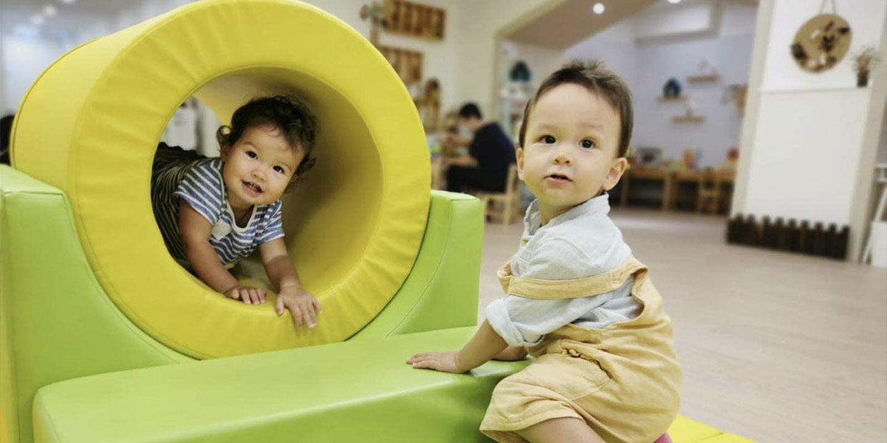

幼兒親子Playgroup課程

培育教育中心在九龍黃埔、香港島康怡和新界粉嶺的分校都設有Playgroup課程。我們的Playgroup課程設計旨在幫助幼兒平穩過渡，減少幼兒與父母的分離焦慮，同時激發孩子的想象力和學習興趣。幼兒將在Playgroup中進行各種遊戲和活動，包括體操、角色扮演、創意藝術和音樂遊戲等。我們將教授孩子們基本的社交技能、情緒調節和自我表達，同時鼓勵他們探索自然、藝術和科學的奧秘。我們相信，Playgroup不僅僅是一個休閒的場所，它是孩子成長的起點，是他們在準備進入早期教育階段的基石。我們的專業教師團隊將會為孩子提供充滿愛意和關懷的教學環境，確保他們能夠自信地從Playgroup過渡到正式的學前教育。我們有經驗豐富的外籍教師教授英文PN班和英文N班，讓他們在多元文化的環境中學習和成長。我們承諾提供一個愉快而富有教育意義的學習環境，幫助孩子們在未來的學習道路上取得成功。